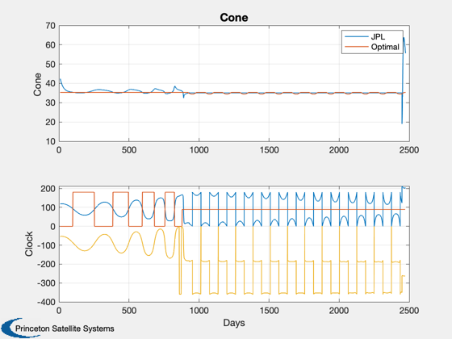
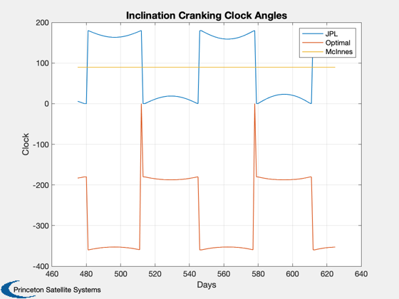
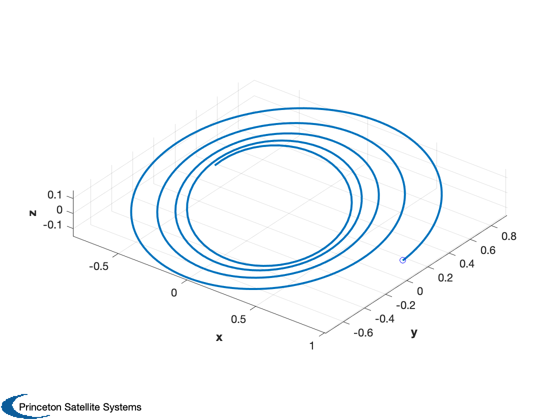
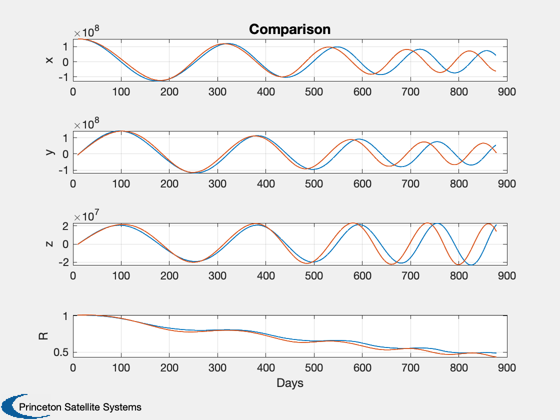
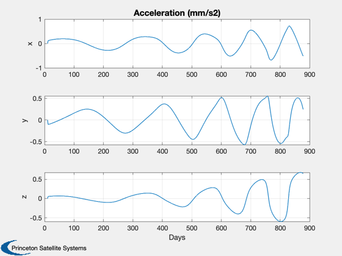
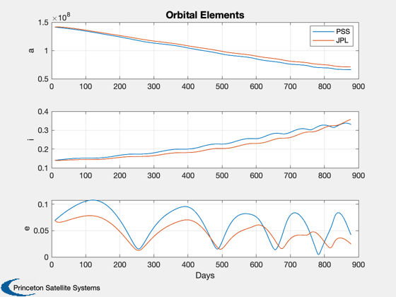

Solar Polar Imager demo with JPL optimal trajectory data.
Verify clock conversions by comparing against McInnes format. Simple Sun gravity model suffices.
------------------------------------------------------------------------ See also FSailJPL and FSailGuidance., Cone, Constant, Plot2D, Plot3D, Cross, Mag, RK45, Unit, PlotOrbitPage, El2RV, Nu2M, RV2El, ClockConversion, delta, LocallyOptimalTraj ------------------------------------------------------------------------
Contents
%------------------------------------------------------------------------------- % Copyright (c) 2005,2006 Princeton Satellite Systems, Inc. % All rights reserved. % Since version 7. %------------------------------------------------------------------------------- %%%%%%%%%%%%%%%%%%%%%%%%%%%%%%%%%%%%%%%%%%%%%%%%%%%%%%%%% % User Parameters phase = 1; % Phase 1, points to 440. Phase 2, beyond. integration = 2; % 1, JPL angles. 2, McInnes conversion. plotHistory = 0; % 1, plot full trajectory. 0, don't. %%%%%%%%%%%%%%%%%%%%%%%%%%%%%%%%%%%%%%%%%%%%%%%%%%%%%%%%% d = load('SPIData.mat'); deg2rad = pi/180; muSun = 132712440017.987; au = Constant('au');
Use only nonzero angle data points (from inspection)
%----------------------------------------------------- nPts = 1292; jD = d.data(2:(nPts+1),2)'+2450000.0; days = d.data(2:(nPts+1),1)'; % Elements are stored in AU and degrees elJPL = d.data(2:(nPts+1),20+[1:6])'; cone = d.data(2:(nPts+1),9)'; clock = d.data(2:(nPts+1),10)'; acc = d.data(2:(nPts+1),12)'; % Convert elements to km and radians and reorder % PSS format: [a;i;W;w;e;M]
JPL order: [a;e;i;W;w;f]
%------------------------------------------------ el = zeros(size(elJPL)); el(1,:) = elJPL(1,1:nPts)*au; % sma el(2,:) = elJPL(3,1:nPts)*pi/180; % inc el(3,:) = elJPL(4,1:nPts)*pi/180; % lan el(4,:) = elJPL(5,1:nPts)*pi/180; % apf el(5,:) = elJPL(2,1:nPts); % ecc el(6,:) = Nu2M( el(5,:), elJPL(6,:)*pi/180 ); % M [r,v] = El2RV( el, [], muSun ); % Last elements of JPL output reversed??? % Mean anomaly and |r| of last portion constant. el(4,:) = elJPL(6,1:nPts)*pi/180; % apf el(6,:) = Nu2M( el(5,:), elJPL(5,:)*pi/180 ); % M [r,v] = El2RV( el, [], muSun ); if plotHistory % Plot trajectory data for confirmation %-------------------------------------- PlotOrbitPage(r/au,days(1:nPts),'SPI Trajectory (JPL)') Plot2D(days,[cone;clock],'Time (days)',{'Cone','Clock'},'SPI Angles (JPL)') Plot2D(days,el([1 2 5],:),'Time',{'SMA','Inc','Ecc'}) end
Convert clock to McInnes format
%-------------------------------- clockNew = zeros(1,nPts); alpha = zeros(1,nPts); delta = zeros(1,nPts); dCC = struct('r',r,'v',v,'s',-Unit(r),'eciFlag',0); clockNew = ClockConversion( cone*deg2rad, clock*deg2rad, 3, 1, dCC )/deg2rad; % Compare to locally optimal law (McInnes) [alpha1, delta1] = LocallyOptimalTraj( 'inclination', r(:,6:440), v(:,6:440), muSun, 1 ); alpha(6:440) = alpha1; delta(6:440) = delta1; [alpha2, delta2] = LocallyOptimalTraj( 'semi-major axis', r(:,441:end), v(:,441:end), muSun, 1 ); alpha(441:end) = alpha2; delta(441:end) = delta2; Plot2D(days(6:nPts),[cone(6:nPts);clock(6:end);-clockNew(6:end);alpha(6:end)/deg2rad;delta(6:end)/deg2rad],... 'Days',{'Cone','Clock'},'','lin',{'[1 4]','[2 5 3]'}) legend('JPL','Optimal','McInnes') % Zoom in on cranking nSelect = 475:625; Plot2D(nSelect,[clock(nSelect);-clockNew(nSelect);delta(nSelect)/deg2rad],... 'Days',{'Clock'},'Inclination Cranking Clock Angles') legend('JPL','Optimal','McInnes') % Try integrating with sail angles
Warning: Ignoring extra legend entries. 
semi-major axis change: to point 440
%----------------------------------------------- switch phase case 1 nMin = 6; nMax = 440; case 2 nMin = 450; nMax = 650; end x = [r(:,nMin); v(:,nMin)]; xPlot = zeros(6,nMax-nMin+1); aPlot = zeros(3,nMax-nMin+1); elPlot = zeros(6,nMax-nMin+1); xPlot(:,1) = x; elPlot(:,1) = RV2El(x(1:3),x(4:6),muSun); muSun = Constant('mu sun'); kP = 2; coneR = cone*deg2rad; clockR = clock*deg2rad; % characteristic acceleration a0 = acc(6)*Mag(r(:,6))^2/au^2/cos(cone(6)*pi/180)^2*1e-6; for k = (nMin):(nMax-1) cC = cos(coneR(k)); sC = sin(coneR(k)); cL = cos(clockR(k)); sL = sin(clockR(k)); % heliocentric clock frame - sail normal xHat = -Unit(x(1:3)); zHat = Unit(Cross(xHat,[0;0;1])); yHat = Unit(Cross(zHat,xHat)); % Projection of North ecliptic nSail = cC*xHat + sC*cL*yHat + sC*sL*zHat; dT = (days(k+1)-days(k))*86400; if dT~=0 switch integration case 1 [x,hLast] = RK45( 'FSailJPL', x, dT, dT, 8640, 1e-8, days(k), acc(k)*1e-6, coneR(k), clockR(k), muSun ); case 2 %[x,hLast] = RK45( 'FSailGuidance', x, dT, dT, 8640, 1e-6, 0, acc(k)*1e-6/cC^2, coneR(k), -clockNew(k)*deg2rad, muSun ); [x,hLast] = RK45( 'FSailGuidance', x, dT, dT, 8640, 1e-6, 0, a0, coneR(k), -clockNew(k)*deg2rad, muSun ); end end xPlot(:,kP) = x; aPlot(:,kP) = -acc(k)*nSail; elPlot(:,kP) = RV2El(x(1:3),x(4:6),muSun); kP = kP+1; end Plot3D(xPlot(1:3,:)/au) hold on plot3(xPlot(1,1)/au,xPlot(2,1)/au,xPlot(3,1)/au,'bo') Plot2D(days(nMin:nMax),[r(1:3,nMin:nMax);xPlot(1:3,:);Mag(r(1:3,nMin:nMax))/au;Mag(xPlot(1:3,:))/au],... 'Days',{'x','y','z','R'},'Comparison','lin',{[1 4],[2 5],[3 6],[7 8]}) Plot2D(days(nMin:nMax),aPlot,'Days',{'x','y','z'},'Acceleration (mm/s2)') Plot2D(days(nMin:nMax),[elPlot([1 2 5],:);el([1 2 5],nMin:nMax)],'Days',{'a','i','e'},'Orbital Elements',[],... {[1 4],[2 5],[3 6]}) legend('PSS','JPL') %-------------------------------------- % PSS internal file version information %--------------------------------------   